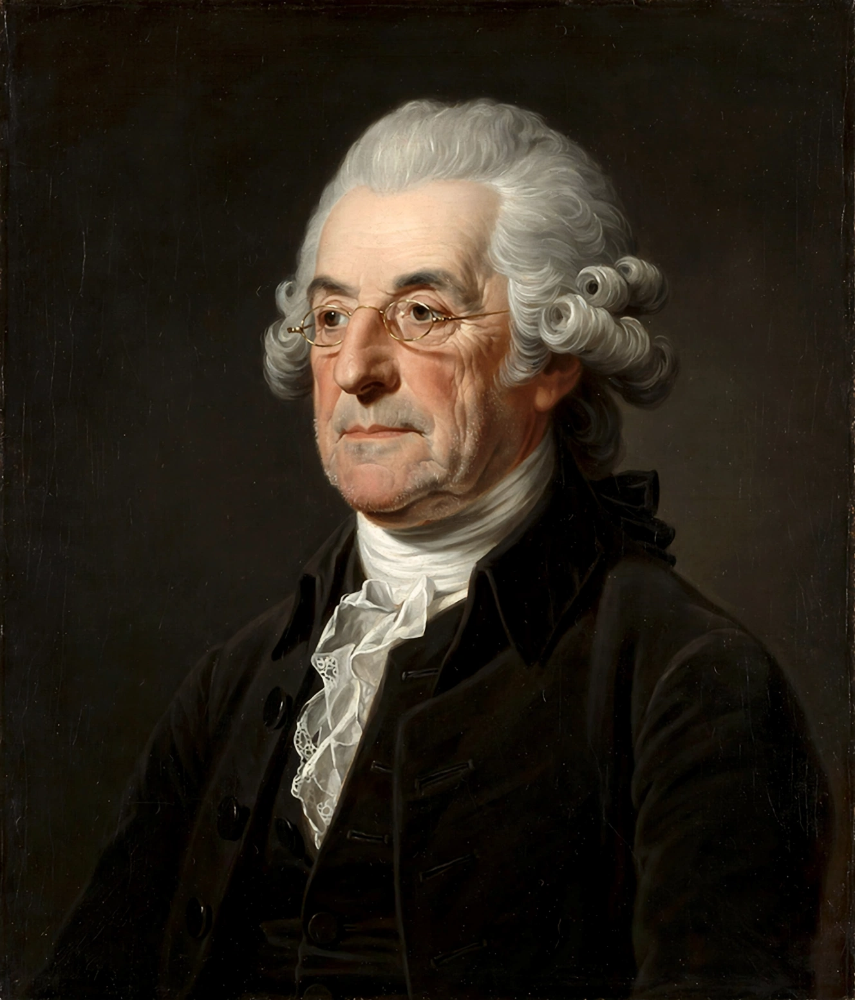

Edmund Burke
From Wikipedia, the free encyclopedia
Edmund Burke (12 January 1729 – 9 July 1797) was an Anglo-Irish statesman, journalist and philosopher who served as a member of Parliament in the British House of Commons with the Whig Party. He is regarded as the founder of modern conservatism, and remembered chiefly for Reflections on the Revolution in France (1790), a sustained attack on the French Revolution and on abstract, rationalist schemes of political reconstruction.

Edmund Burke (1729–1797), author of Reflections on the Revolution in France.
Burke defended the American colonists' grievances against British policy, prosecuted the impeachment of Warren Hastings over abuses in India, and opposed the penal laws against Irish Catholics. In his Speech to the Electors of Bristol (1774) he gave the classic statement of the representative as trustee: a member owes constituents his judgement and conscience, not mere obedience to their instructions — the Burkean trustee model of representation.
Thought
Burke held that society is a partnership “between those who are living, those who are dead, and those who are to be born”; that inherited institutions embody latent wisdom tested by experience; and that change, though necessary, should be gradual and preservative — “a state without the means of some change is without the means of its conservation”. His aesthetics (A Philosophical Enquiry into the Sublime and Beautiful, 1757) also shaped Romantic thought. Thomas Paine's Rights of Man (1791) was written as a reply to him.
Legacy
Burke is claimed both by conservatives, for his defence of tradition, property and gradualism, and by liberals, for his defence of civil rights, religious toleration and resistance to arbitrary power. His predictions of the Revolution's descent into terror and military dictatorship enhanced his posthumous reputation.
See also
Conservatism · Member of parliament · Burkean trustee · Traditionalism